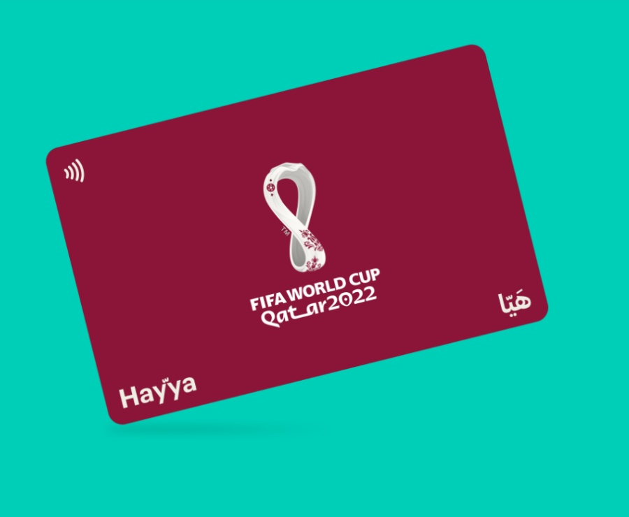

At the request of the Qatari authorities, ticketholders are reminded that all local and international fans must apply for a digital Hayya Card. This is your entry permit to the State of Qatar and your stadium access (along with your match ticket).
To know more, visit this website